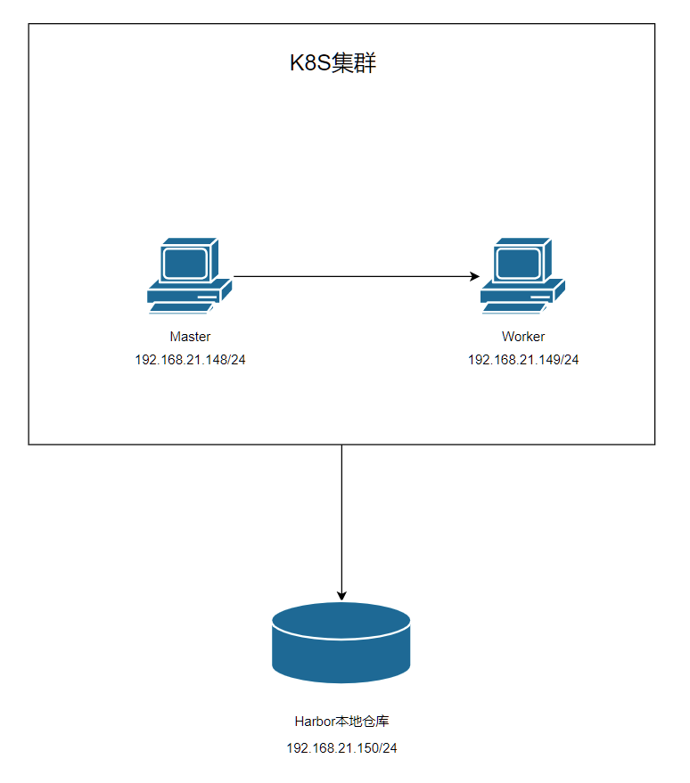

<!DOCTYPE html>
<html lang="zh-CN">
<head>
  <meta charset="UTF-8">
<meta name="viewport" content="width=device-width, initial-scale=1, maximum-scale=2">
<meta name="theme-color" content="#222">
<meta name="generator" content="Hexo 4.2.1">
  <link rel="apple-touch-icon" sizes="180x180" href="/images/apple-touch-icon-next.png">
  <link rel="icon" type="image/png" sizes="32x32" href="/images/favicon-32x32-next.png">
  <link rel="icon" type="image/png" sizes="16x16" href="/images/favicon-16x16-next.png">
  <link rel="mask-icon" href="/images/logo.svg" color="#222">

<link rel="stylesheet" href="/css/main.css">


<link rel="stylesheet" href="/lib/font-awesome/css/all.min.css">

<script id="hexo-configurations">
    var NexT = window.NexT || {};
    var CONFIG = {"hostname":"zuhuima.github.io","root":"/","scheme":"Muse","version":"7.8.0","exturl":false,"sidebar":{"position":"left","display":"post","padding":18,"offset":12,"onmobile":false},"copycode":{"enable":true,"show_result":true,"style":null},"back2top":{"enable":true,"sidebar":false,"scrollpercent":false},"bookmark":{"enable":false,"color":"#222","save":"auto"},"fancybox":false,"mediumzoom":false,"lazyload":false,"pangu":false,"comments":{"style":"tabs","active":null,"storage":true,"lazyload":false,"nav":null},"algolia":{"hits":{"per_page":10},"labels":{"input_placeholder":"Search for Posts","hits_empty":"We didn't find any results for the search: ${query}","hits_stats":"${hits} results found in ${time} ms"}},"localsearch":{"enable":false,"trigger":"auto","top_n_per_article":1,"unescape":false,"preload":false},"motion":{"enable":true,"async":false,"transition":{"post_block":"fadeIn","post_header":"slideDownIn","post_body":"slideDownIn","coll_header":"slideLeftIn","sidebar":"slideUpIn"}}};
  </script>

  <meta name="description" content="Harbor离线部署图文教程环境机器环境： 系统版本：Centos-7 内核版本：3.10.0-1160.el7.x86_64">
<meta property="og:type" content="article">
<meta property="og:title" content="Harbor离线部署教程">
<meta property="og:url" content="https://zuhuima.github.io/2022/01/02/Harbor%E7%A6%BB%E7%BA%BF%E9%83%A8%E7%BD%B2%E6%95%99%E7%A8%8B/index.html">
<meta property="og:site_name" content="马祖晖的个人笔记">
<meta property="og:description" content="Harbor离线部署图文教程环境机器环境： 系统版本：Centos-7 内核版本：3.10.0-1160.el7.x86_64">
<meta property="og:locale" content="zh_CN">
<meta property="og:image" content="https://zuhuima.github.io/2022/01/02/Harbor%E7%A6%BB%E7%BA%BF%E9%83%A8%E7%BD%B2%E6%95%99%E7%A8%8B/image-20210705133452885.png">
<meta property="og:image" content="c:%5CUsers%5Cmazuhui%5CDownloads%5Coffline_package%5C%E5%9B%BE%E6%96%87%E6%95%99%E7%A8%8B%5Cimage-20210705143021281.png">
<meta property="article:published_time" content="2022-01-02T07:10:39.000Z">
<meta property="article:modified_time" content="2022-01-02T09:15:57.899Z">
<meta property="article:author" content="马祖晖">
<meta property="article:tag" content="我的主页">
<meta name="twitter:card" content="summary">
<meta name="twitter:image" content="https://zuhuima.github.io/2022/01/02/Harbor%E7%A6%BB%E7%BA%BF%E9%83%A8%E7%BD%B2%E6%95%99%E7%A8%8B/image-20210705133452885.png">

<link rel="canonical" href="https://zuhuima.github.io/2022/01/02/Harbor%E7%A6%BB%E7%BA%BF%E9%83%A8%E7%BD%B2%E6%95%99%E7%A8%8B/">


<script id="page-configurations">
  // https://hexo.io/docs/variables.html
  CONFIG.page = {
    sidebar: "",
    isHome : false,
    isPost : true,
    lang   : 'zh-CN'
  };
</script>

  <title>Harbor离线部署教程 | 马祖晖的个人笔记</title>
  


  <noscript>
  <style>
  .use-motion .brand,
  .use-motion .menu-item,
  .sidebar-inner,
  .use-motion .post-block,
  .use-motion .pagination,
  .use-motion .comments,
  .use-motion .post-header,
  .use-motion .post-body,
  .use-motion .collection-header { opacity: initial; }

  .use-motion .site-title,
  .use-motion .site-subtitle {
    opacity: initial;
    top: initial;
  }

  .use-motion .logo-line-before i { left: initial; }
  .use-motion .logo-line-after i { right: initial; }
  </style>
</noscript>

</head>

<body itemscope itemtype="http://schema.org/WebPage">
  <div class="container use-motion">
    <div class="headband"></div>

    <header class="header" itemscope itemtype="http://schema.org/WPHeader">
      <div class="header-inner"><div class="site-brand-container">
  <div class="site-nav-toggle">
    <div class="toggle" aria-label="切换导航栏">
      <span class="toggle-line toggle-line-first"></span>
      <span class="toggle-line toggle-line-middle"></span>
      <span class="toggle-line toggle-line-last"></span>
    </div>
  </div>

  <div class="site-meta">

    <a href="/" class="brand" rel="start">
      <span class="logo-line-before"><i></i></span>
      <h1 class="site-title">马祖晖的个人笔记</h1>
      <span class="logo-line-after"><i></i></span>
    </a>
      <p class="site-subtitle" itemprop="description">做人最重要的就是开心啦</p>
  </div>

  <div class="site-nav-right">
    <div class="toggle popup-trigger">
    </div>
  </div>
</div>


<nav class="site-nav">
  <ul id="menu" class="main-menu menu">
        <li class="menu-item menu-item-home">

    <a href="/" rel="section"><i class="fa fa-home fa-fw"></i>首页</a>

  </li>
        <li class="menu-item menu-item-tags">

    <a href="/tags/" rel="section"><i class="fa fa-tags fa-fw"></i>标签</a>

  </li>
        <li class="menu-item menu-item-categories">

    <a href="/categories/" rel="section"><i class="fa fa-th fa-fw"></i>分类</a>

  </li>
        <li class="menu-item menu-item-archives">

    <a href="/archives/" rel="section"><i class="fa fa-archive fa-fw"></i>归档</a>

  </li>
  </ul>
</nav>


</div>
    </header>

    
  <div class="back-to-top">
    <i class="fa fa-arrow-up"></i>
    <span>0%</span>
  </div>


    <main class="main">
      <div class="main-inner">
        <div class="content-wrap">
          

          <div class="content post posts-expand">
            

    
  
  
  <article itemscope itemtype="http://schema.org/Article" class="post-block" lang="zh-CN">
    <link itemprop="mainEntityOfPage" href="https://zuhuima.github.io/2022/01/02/Harbor%E7%A6%BB%E7%BA%BF%E9%83%A8%E7%BD%B2%E6%95%99%E7%A8%8B/">

    <span hidden itemprop="author" itemscope itemtype="http://schema.org/Person">
      <meta itemprop="image" content="/images/avatar.gif">
      <meta itemprop="name" content="马祖晖">
      <meta itemprop="description" content="">
    </span>

    <span hidden itemprop="publisher" itemscope itemtype="http://schema.org/Organization">
      <meta itemprop="name" content="马祖晖的个人笔记">
    </span>
      <header class="post-header">
        <h1 class="post-title" itemprop="name headline">
          Harbor离线部署教程
        </h1>

        <div class="post-meta">
            <span class="post-meta-item">
              <span class="post-meta-item-icon">
                <i class="far fa-calendar"></i>
              </span>
              <span class="post-meta-item-text">发表于</span>
              

              <time title="创建时间：2022-01-02 15:10:39 / 修改时间：17:15:57" itemprop="dateCreated datePublished" datetime="2022-01-02T15:10:39+08:00">2022-01-02</time>
            </span>

          

        </div>
      </header>

    
    
    
    <div class="post-body" itemprop="articleBody">

      
        <h1 id="Harbor离线部署图文教程"><a href="#Harbor离线部署图文教程" class="headerlink" title="Harbor离线部署图文教程"></a>Harbor离线部署图文教程</h1><h2 id="环境"><a href="#环境" class="headerlink" title="环境"></a>环境</h2><p>机器环境：</p>
<p>系统版本：Centos-7</p>
<p>内核版本：3.10.0-1160.el7.x86_64</p>
<a id="more"></a>

<h4 id="K8S集群要求"><a href="#K8S集群要求" class="headerlink" title="K8S集群要求"></a>K8S集群要求</h4><p>master：192.168.21.148/24<br>worker：192.168.21.149/24</p>
<hr>
<p>harbor：192.168.21.150/24 （本次操作的机器）</p>
<h2 id="网络拓扑图"><a href="#网络拓扑图" class="headerlink" title="网络拓扑图"></a>网络拓扑图</h2>

<p>本次部署教程是基于上一篇部署教程“K8S离线安装图文教程”，假定k8s集群已经成功部署完毕。</p>
<p>且该集群Master节点ip为192.168.21.148/24，Worker节点ip为192.168.21.149/24。</p>
<h2 id="部署流程"><a href="#部署流程" class="headerlink" title="部署流程"></a>部署流程</h2><h3 id="0-准备工作"><a href="#0-准备工作" class="headerlink" title="0 准备工作"></a>0 准备工作</h3><p>将离线资源包传输到harbor服务器中，进入harbor文件夹内，切换到su。</p>
<h3 id="1-安装docker"><a href="#1-安装docker" class="headerlink" title="1 安装docker"></a>1 安装docker</h3><h4 id="1-1-解压docker安装包，复制可执行文件到bin下"><a href="#1-1-解压docker安装包，复制可执行文件到bin下" class="headerlink" title="1.1 解压docker安装包，复制可执行文件到bin下"></a>1.1 解压docker安装包，复制可执行文件到bin下</h4><figure class="highlight bash"><table><tr><td class="gutter"><pre><span class="line">1</span><br><span class="line">2</span><br></pre></td><td class="code"><pre><span class="line">tar xzvf docker-19.03.10.tgz</span><br><span class="line">cp docker/* /usr/bin/</span><br></pre></td></tr></table></figure>

<h4 id="1-2-创建服务"><a href="#1-2-创建服务" class="headerlink" title="1.2 创建服务"></a>1.2 创建服务</h4><figure class="highlight bash"><table><tr><td class="gutter"><pre><span class="line">1</span><br></pre></td><td class="code"><pre><span class="line">vi /etc/systemd/system/docker.service</span><br></pre></td></tr></table></figure>

<h4 id="1-3-添加内容"><a href="#1-3-添加内容" class="headerlink" title="1.3 添加内容"></a>1.3 添加内容</h4><figure class="highlight bash"><table><tr><td class="gutter"><pre><span class="line">1</span><br><span class="line">2</span><br><span class="line">3</span><br><span class="line">4</span><br><span class="line">5</span><br><span class="line">6</span><br><span class="line">7</span><br><span class="line">8</span><br><span class="line">9</span><br><span class="line">10</span><br><span class="line">11</span><br><span class="line">12</span><br><span class="line">13</span><br><span class="line">14</span><br><span class="line">15</span><br><span class="line">16</span><br><span class="line">17</span><br><span class="line">18</span><br><span class="line">19</span><br><span class="line">20</span><br><span class="line">21</span><br><span class="line">22</span><br><span class="line">23</span><br><span class="line">24</span><br><span class="line">25</span><br><span class="line">26</span><br><span class="line">27</span><br><span class="line">28</span><br><span class="line">29</span><br><span class="line">30</span><br><span class="line">31</span><br><span class="line">32</span><br><span class="line">33</span><br><span class="line">34</span><br></pre></td><td class="code"><pre><span class="line">[Unit]</span><br><span class="line"></span><br><span class="line">Description=Docker Application Container Engine</span><br><span class="line"></span><br><span class="line">Documentation=https://docs.docker.com</span><br><span class="line"></span><br><span class="line">After=network-online.target firewalld.service</span><br><span class="line"></span><br><span class="line">Wants=network-online.target</span><br><span class="line"></span><br><span class="line">[Service]</span><br><span class="line"></span><br><span class="line">Type=notify</span><br><span class="line"></span><br><span class="line">ExecStart=/usr/bin/dockerd</span><br><span class="line"></span><br><span class="line">ExecReload=/bin/<span class="built_in">kill</span> -s HUP <span class="variable">$MAINPID</span></span><br><span class="line"></span><br><span class="line">LimitNOFILE=infinity</span><br><span class="line"></span><br><span class="line">LimitNPROC=infinity</span><br><span class="line"></span><br><span class="line">TimeoutStartSec=0</span><br><span class="line"></span><br><span class="line">Delegate=yes</span><br><span class="line"></span><br><span class="line">KillMode=process</span><br><span class="line"></span><br><span class="line">Restart=on-failure</span><br><span class="line"></span><br><span class="line">StartLimitBurst=3</span><br><span class="line"></span><br><span class="line">[Install]</span><br><span class="line">WantedBy=multi-user.target</span><br></pre></td></tr></table></figure>

<h4 id="1-4-赋执行权限，设置自启动，启动docker"><a href="#1-4-赋执行权限，设置自启动，启动docker" class="headerlink" title="1.4 赋执行权限，设置自启动，启动docker"></a>1.4 赋执行权限，设置自启动，启动docker</h4><figure class="highlight bash"><table><tr><td class="gutter"><pre><span class="line">1</span><br><span class="line">2</span><br><span class="line">3</span><br><span class="line">4</span><br></pre></td><td class="code"><pre><span class="line">chmod +x /etc/systemd/system/docker.service</span><br><span class="line">systemctl daemon-reload</span><br><span class="line">systemctl <span class="built_in">enable</span> docker.service</span><br><span class="line">systemctl start docker</span><br></pre></td></tr></table></figure>

<p>此时应该可以启动docker命令。</p>
<h3 id="2-安装docker-compose"><a href="#2-安装docker-compose" class="headerlink" title="2 安装docker-compose"></a>2 安装docker-compose</h3><p>确认docker命令可用，切换到su</p>
<h4 id="2-1-添加到bin"><a href="#2-1-添加到bin" class="headerlink" title="2.1 添加到bin"></a>2.1 添加到bin</h4><p>将docker-composer⽂件重命名为docker-composer，存放到/usr/local/bin⽬录下</p>
<figure class="highlight bash"><table><tr><td class="gutter"><pre><span class="line">1</span><br></pre></td><td class="code"><pre><span class="line">cp docker-compose-Linux-x86_64 /usr/<span class="built_in">local</span>/bin/docker-compose</span><br></pre></td></tr></table></figure>

<h4 id="2-2-添加操作权限"><a href="#2-2-添加操作权限" class="headerlink" title="2.2 添加操作权限"></a>2.2 添加操作权限</h4><figure class="highlight bash"><table><tr><td class="gutter"><pre><span class="line">1</span><br></pre></td><td class="code"><pre><span class="line">chmod +x /usr/<span class="built_in">local</span>/bin/docker-compose</span><br></pre></td></tr></table></figure>

<h4 id="2-3-检查是否安装成功"><a href="#2-3-检查是否安装成功" class="headerlink" title="2.3 检查是否安装成功"></a>2.3 检查是否安装成功</h4><figure class="highlight bash"><table><tr><td class="gutter"><pre><span class="line">1</span><br></pre></td><td class="code"><pre><span class="line">docker-compose version</span><br></pre></td></tr></table></figure>

<p>应该有以下输出</p>
<figure class="highlight bash"><table><tr><td class="gutter"><pre><span class="line">1</span><br><span class="line">2</span><br><span class="line">3</span><br><span class="line">4</span><br></pre></td><td class="code"><pre><span class="line">docker-compose version 1.18.0, build 8dd22a9</span><br><span class="line">docker-py version: 2.6.1</span><br><span class="line">CPython version: 2.7.13</span><br><span class="line">OpenSSL version: OpenSSL 1.0.1t  3 May 2016</span><br></pre></td></tr></table></figure>


<h3 id="3-启动Harbor"><a href="#3-启动Harbor" class="headerlink" title="3 启动Harbor"></a>3 启动Harbor</h3><h4 id="3-1-解压harbor离线安装包"><a href="#3-1-解压harbor离线安装包" class="headerlink" title="3.1 解压harbor离线安装包"></a>3.1 解压harbor离线安装包</h4><figure class="highlight bash"><table><tr><td class="gutter"><pre><span class="line">1</span><br></pre></td><td class="code"><pre><span class="line">tar xf harbor-offline-installer-v2.3.0.tgz</span><br></pre></td></tr></table></figure>

<h4 id="3-2-修改harbor配置"><a href="#3-2-修改harbor配置" class="headerlink" title="3.2 修改harbor配置"></a>3.2 修改harbor配置</h4><figure class="highlight css"><table><tr><td class="gutter"><pre><span class="line">1</span><br><span class="line">2</span><br><span class="line">3</span><br></pre></td><td class="code"><pre><span class="line"><span class="selector-tag">cd</span> <span class="selector-tag">harbor</span></span><br><span class="line"><span class="selector-tag">cp</span> <span class="selector-tag">harbor</span><span class="selector-class">.yml</span><span class="selector-class">.tmpl</span> <span class="selector-tag">harbor</span><span class="selector-class">.yml</span></span><br><span class="line"><span class="selector-tag">vi</span> <span class="selector-tag">harbor</span><span class="selector-class">.yml</span></span><br></pre></td></tr></table></figure>

<h4 id="3-3-修改以下配置"><a href="#3-3-修改以下配置" class="headerlink" title="3.3 修改以下配置"></a>3.3 修改以下配置</h4><figure class="highlight routeros"><table><tr><td class="gutter"><pre><span class="line">1</span><br><span class="line">2</span><br><span class="line">3</span><br><span class="line">4</span><br><span class="line">5</span><br><span class="line">6</span><br><span class="line">7</span><br><span class="line">8</span><br><span class="line">9</span><br><span class="line">10</span><br><span class="line">11</span><br><span class="line">12</span><br></pre></td><td class="code"><pre><span class="line">hostname: 192.168.21.150 #此为本机ip</span><br><span class="line">http:</span><br><span class="line"> port: 8089</span><br><span class="line">harbor_admin_password: Admin12345</span><br><span class="line"><span class="comment"># 注释掉以下所有https配置</span></span><br><span class="line"><span class="comment"># https related config</span></span><br><span class="line"><span class="comment"># https:</span></span><br><span class="line">  # https<span class="built_in"> port </span><span class="keyword">for</span> harbor,<span class="built_in"> default </span>is 443</span><br><span class="line"> # port: 443</span><br><span class="line">  # The path of cert <span class="keyword">and</span> key files <span class="keyword">for</span> nginx</span><br><span class="line">  # certificate: /your/certificate/path</span><br><span class="line">  # private_key: /your/private/key/path</span><br></pre></td></tr></table></figure>

<h4 id="3-4-安装harbor"><a href="#3-4-安装harbor" class="headerlink" title="3.4 安装harbor"></a>3.4 安装harbor</h4><figure class="highlight bash"><table><tr><td class="gutter"><pre><span class="line">1</span><br></pre></td><td class="code"><pre><span class="line">./install.sh</span><br></pre></td></tr></table></figure>

<p>输出如下</p>
<figure class="highlight bash"><table><tr><td class="gutter"><pre><span class="line">1</span><br><span class="line">2</span><br><span class="line">3</span><br><span class="line">4</span><br><span class="line">5</span><br><span class="line">6</span><br><span class="line">7</span><br><span class="line">8</span><br><span class="line">9</span><br><span class="line">10</span><br><span class="line">11</span><br><span class="line">12</span><br><span class="line">13</span><br><span class="line">14</span><br><span class="line">15</span><br><span class="line">16</span><br><span class="line">17</span><br><span class="line">18</span><br><span class="line">19</span><br><span class="line">20</span><br><span class="line">21</span><br><span class="line">22</span><br><span class="line">23</span><br><span class="line">24</span><br><span class="line">25</span><br><span class="line">26</span><br><span class="line">27</span><br><span class="line">28</span><br><span class="line">29</span><br><span class="line">30</span><br><span class="line">31</span><br><span class="line">32</span><br><span class="line">33</span><br><span class="line">34</span><br><span class="line">35</span><br><span class="line">36</span><br><span class="line">37</span><br><span class="line">38</span><br><span class="line">39</span><br><span class="line">40</span><br><span class="line">41</span><br><span class="line">42</span><br><span class="line">43</span><br><span class="line">44</span><br><span class="line">45</span><br><span class="line">46</span><br><span class="line">47</span><br><span class="line">48</span><br><span class="line">49</span><br><span class="line">50</span><br><span class="line">51</span><br><span class="line">52</span><br><span class="line">53</span><br><span class="line">54</span><br><span class="line">55</span><br><span class="line">56</span><br><span class="line">57</span><br><span class="line">58</span><br><span class="line">59</span><br><span class="line">60</span><br><span class="line">61</span><br><span class="line">62</span><br><span class="line">63</span><br><span class="line">64</span><br><span class="line">65</span><br><span class="line">66</span><br><span class="line">67</span><br><span class="line">68</span><br><span class="line">69</span><br><span class="line">70</span><br><span class="line">71</span><br><span class="line">72</span><br><span class="line">73</span><br><span class="line">74</span><br><span class="line">75</span><br><span class="line">76</span><br><span class="line">77</span><br><span class="line">78</span><br><span class="line">79</span><br><span class="line">80</span><br><span class="line">81</span><br><span class="line">82</span><br><span class="line">83</span><br><span class="line">84</span><br><span class="line">85</span><br><span class="line">86</span><br><span class="line">87</span><br><span class="line">88</span><br><span class="line">89</span><br><span class="line">90</span><br><span class="line">91</span><br><span class="line">92</span><br><span class="line">93</span><br><span class="line">94</span><br><span class="line">95</span><br><span class="line">96</span><br><span class="line">97</span><br><span class="line">98</span><br><span class="line">99</span><br><span class="line">100</span><br><span class="line">101</span><br><span class="line">102</span><br><span class="line">103</span><br><span class="line">104</span><br><span class="line">105</span><br><span class="line">106</span><br><span class="line">107</span><br><span class="line">108</span><br><span class="line">109</span><br><span class="line">110</span><br><span class="line">111</span><br><span class="line">112</span><br><span class="line">113</span><br><span class="line">114</span><br><span class="line">115</span><br><span class="line">116</span><br><span class="line">117</span><br><span class="line">118</span><br><span class="line">119</span><br><span class="line">120</span><br><span class="line">121</span><br><span class="line">122</span><br><span class="line">123</span><br><span class="line">124</span><br><span class="line">125</span><br><span class="line">126</span><br><span class="line">127</span><br><span class="line">128</span><br><span class="line">129</span><br><span class="line">130</span><br><span class="line">131</span><br><span class="line">132</span><br><span class="line">133</span><br><span class="line">134</span><br><span class="line">135</span><br><span class="line">136</span><br><span class="line">137</span><br><span class="line">138</span><br><span class="line">139</span><br><span class="line">140</span><br><span class="line">141</span><br><span class="line">142</span><br><span class="line">143</span><br><span class="line">144</span><br><span class="line">145</span><br><span class="line">146</span><br><span class="line">147</span><br><span class="line">148</span><br><span class="line">149</span><br></pre></td><td class="code"><pre><span class="line">[Step 0]: checking <span class="keyword">if</span> docker is installed ...</span><br><span class="line"></span><br><span class="line">Note: docker version: 19.03.10</span><br><span class="line"></span><br><span class="line">[Step 1]: checking docker-compose is installed ...</span><br><span class="line"></span><br><span class="line">Note: docker-compose version: 1.18.0</span><br><span class="line"></span><br><span class="line">[Step 2]: loading Harbor images ...</span><br><span class="line">7b63ae3694f2: Loading layer [==================================================&gt;]  36.92MB/36.92MB</span><br><span class="line">b8cb4f2fe042: Loading layer [==================================================&gt;]  8.112MB/8.112MB</span><br><span class="line">Loaded image: goharbor/nginx-photon:v2.3.0</span><br><span class="line">2b6cbbd060e5: Loading layer [==================================================&gt;]  6.186MB/6.186MB</span><br><span class="line">69fc2a5d7057: Loading layer [==================================================&gt;]  4.096kB/4.096kB</span><br><span class="line">421b6d0db9f6: Loading layer [==================================================&gt;]  3.072kB/3.072kB</span><br><span class="line">bc5645ad7d34: Loading layer [==================================================&gt;]  19.02MB/19.02MB</span><br><span class="line">962c38e6d231: Loading layer [==================================================&gt;]  19.81MB/19.81MB</span><br><span class="line">Loaded image: goharbor/registry-photon:v2.3.0</span><br><span class="line">4d82179a9400: Loading layer [==================================================&gt;]  9.914MB/9.914MB</span><br><span class="line">675e2c32eb5d: Loading layer [==================================================&gt;]  3.584kB/3.584kB</span><br><span class="line">8818aef7131e: Loading layer [==================================================&gt;]   2.56kB/2.56kB</span><br><span class="line">9d5d2ed48330: Loading layer [==================================================&gt;]  55.83MB/55.83MB</span><br><span class="line">475c7500b29b: Loading layer [==================================================&gt;]  5.632kB/5.632kB</span><br><span class="line">10e61cefb27a: Loading layer [==================================================&gt;]   93.7kB/93.7kB</span><br><span class="line">f2e373a19887: Loading layer [==================================================&gt;]  11.78kB/11.78kB</span><br><span class="line">f622f2e58e5a: Loading layer [==================================================&gt;]  56.73MB/56.73MB</span><br><span class="line">d220e8c2ccdb: Loading layer [==================================================&gt;]   2.56kB/2.56kB</span><br><span class="line">Loaded image: goharbor/harbor-core:v2.3.0</span><br><span class="line">fa7dc2e6a798: Loading layer [==================================================&gt;]  6.186MB/6.186MB</span><br><span class="line">0f612ded4ff1: Loading layer [==================================================&gt;]  4.096kB/4.096kB</span><br><span class="line">fbb3f0d75fe7: Loading layer [==================================================&gt;]  19.02MB/19.02MB</span><br><span class="line">11c455c1ad44: Loading layer [==================================================&gt;]  3.072kB/3.072kB</span><br><span class="line">5b5dc65c296c: Loading layer [==================================================&gt;]   25.4MB/25.4MB</span><br><span class="line">073cf43e62b3: Loading layer [==================================================&gt;]   45.2MB/45.2MB</span><br><span class="line">Loaded image: goharbor/harbor-registryctl:v2.3.0</span><br><span class="line">b106b5752942: Loading layer [==================================================&gt;]  1.096MB/1.096MB</span><br><span class="line">a10890f8f147: Loading layer [==================================================&gt;]  5.888MB/5.888MB</span><br><span class="line">b7d39d927c0a: Loading layer [==================================================&gt;]  209.2MB/209.2MB</span><br><span class="line">c7b75a8ac758: Loading layer [==================================================&gt;]  15.05MB/15.05MB</span><br><span class="line">685aea1b7e0e: Loading layer [==================================================&gt;]  4.096kB/4.096kB</span><br><span class="line">29eea9e3830a: Loading layer [==================================================&gt;]  6.144kB/6.144kB</span><br><span class="line">6c89dc4abd54: Loading layer [==================================================&gt;]  3.072kB/3.072kB</span><br><span class="line">8f6ddd91b278: Loading layer [==================================================&gt;]  2.048kB/2.048kB</span><br><span class="line">44885e6b8efc: Loading layer [==================================================&gt;]   2.56kB/2.56kB</span><br><span class="line">d0650c47bd17: Loading layer [==================================================&gt;]   2.56kB/2.56kB</span><br><span class="line">baa9d588c87c: Loading layer [==================================================&gt;]   2.56kB/2.56kB</span><br><span class="line">c0948a512263: Loading layer [==================================================&gt;]  8.704kB/8.704kB</span><br><span class="line">Loaded image: goharbor/harbor-db:v2.3.0</span><br><span class="line">230bb4d21843: Loading layer [==================================================&gt;]  9.914MB/9.914MB</span><br><span class="line">3b267db69816: Loading layer [==================================================&gt;]  17.67MB/17.67MB</span><br><span class="line">48f062b756ef: Loading layer [==================================================&gt;]  4.608kB/4.608kB</span><br><span class="line">83cea239dd18: Loading layer [==================================================&gt;]  18.46MB/18.46MB</span><br><span class="line">Loaded image: goharbor/harbor-exporter:v2.3.0</span><br><span class="line">7ce03d8b76bc: Loading layer [==================================================&gt;]  156.8MB/156.8MB</span><br><span class="line">146ee77daba1: Loading layer [==================================================&gt;]  3.072kB/3.072kB</span><br><span class="line">7980207d1d35: Loading layer [==================================================&gt;]   59.9kB/59.9kB</span><br><span class="line">4599e620911a: Loading layer [==================================================&gt;]  61.95kB/61.95kB</span><br><span class="line">Loaded image: goharbor/redis-photon:v2.3.0</span><br><span class="line">e1e5285ecc15: Loading layer [==================================================&gt;]  6.181MB/6.181MB</span><br><span class="line">69fa33ea8a76: Loading layer [==================================================&gt;]  6.207MB/6.207MB</span><br><span class="line">90ecbcead336: Loading layer [==================================================&gt;]  14.89MB/14.89MB</span><br><span class="line">05a6e541d31d: Loading layer [==================================================&gt;]  27.38MB/27.38MB</span><br><span class="line">14d6723ce8f3: Loading layer [==================================================&gt;]  22.02kB/22.02kB</span><br><span class="line">cfe4608e735e: Loading layer [==================================================&gt;]  14.89MB/14.89MB</span><br><span class="line">Loaded image: goharbor/notary-server-photon:v2.3.0</span><br><span class="line">65081183b9d5: Loading layer [==================================================&gt;]  8.112MB/8.112MB</span><br><span class="line">4f1c9ff2daf9: Loading layer [==================================================&gt;]  11.64MB/11.64MB</span><br><span class="line">15070dd6843f: Loading layer [==================================================&gt;]  1.688MB/1.688MB</span><br><span class="line">Loaded image: goharbor/harbor-portal:v2.3.0</span><br><span class="line">3ff2cc3e192a: Loading layer [==================================================&gt;]    161MB/161MB</span><br><span class="line">b39b810a2c31: Loading layer [==================================================&gt;]  3.584kB/3.584kB</span><br><span class="line">bc5176327384: Loading layer [==================================================&gt;]  3.072kB/3.072kB</span><br><span class="line">d178cb37812e: Loading layer [==================================================&gt;]   2.56kB/2.56kB</span><br><span class="line">a0eb93f025fe: Loading layer [==================================================&gt;]  3.072kB/3.072kB</span><br><span class="line">26e033b26702: Loading layer [==================================================&gt;]  3.584kB/3.584kB</span><br><span class="line">0532e71b3bd4: Loading layer [==================================================&gt;]  19.97kB/19.97kB</span><br><span class="line">Loaded image: goharbor/harbor-log:v2.3.0</span><br><span class="line">0cae3dac3e77: Loading layer [==================================================&gt;]  9.914MB/9.914MB</span><br><span class="line">90bebc66effb: Loading layer [==================================================&gt;]  3.584kB/3.584kB</span><br><span class="line">595eefd6fb57: Loading layer [==================================================&gt;]   2.56kB/2.56kB</span><br><span class="line">11c19159aa0f: Loading layer [==================================================&gt;]  62.49MB/62.49MB</span><br><span class="line">5d8a4f259631: Loading layer [==================================================&gt;]  63.28MB/63.28MB</span><br><span class="line">Loaded image: goharbor/harbor-jobservice:v2.3.0</span><br><span class="line">7f36930441df: Loading layer [==================================================&gt;]  6.186MB/6.186MB</span><br><span class="line">f3d478212fb5: Loading layer [==================================================&gt;]  67.47MB/67.47MB</span><br><span class="line">028a02a35dde: Loading layer [==================================================&gt;]  3.072kB/3.072kB</span><br><span class="line">4dd4f408cedc: Loading layer [==================================================&gt;]  4.096kB/4.096kB</span><br><span class="line">6bf984b97419: Loading layer [==================================================&gt;]  68.26MB/68.26MB</span><br><span class="line">Loaded image: goharbor/chartmuseum-photon:v2.3.0</span><br><span class="line">3b9eb50911fc: Loading layer [==================================================&gt;]  41.95MB/41.95MB</span><br><span class="line">a817012987ff: Loading layer [==================================================&gt;]  4.096kB/4.096kB</span><br><span class="line">31d1db570868: Loading layer [==================================================&gt;]  3.072kB/3.072kB</span><br><span class="line">e6eb84749dcb: Loading layer [==================================================&gt;]  31.52MB/31.52MB</span><br><span class="line">6217368c82fa: Loading layer [==================================================&gt;]  11.39MB/11.39MB</span><br><span class="line">91c725a368fd: Loading layer [==================================================&gt;]   43.7MB/43.7MB</span><br><span class="line">Loaded image: goharbor/trivy-adapter-photon:v2.3.0</span><br><span class="line">2c161f748767: Loading layer [==================================================&gt;]  200.4MB/200.4MB</span><br><span class="line">16eef9c7272b: Loading layer [==================================================&gt;]  58.92MB/58.92MB</span><br><span class="line">b86cd0a4d811: Loading layer [==================================================&gt;]   2.56kB/2.56kB</span><br><span class="line">e75da51fe165: Loading layer [==================================================&gt;]  1.536kB/1.536kB</span><br><span class="line">7a60083ed5e2: Loading layer [==================================================&gt;]  12.29kB/12.29kB</span><br><span class="line">b0df2e1cb00e: Loading layer [==================================================&gt;]  2.882MB/2.882MB</span><br><span class="line">27f7dc4873f6: Loading layer [==================================================&gt;]    297kB/297kB</span><br><span class="line">Loaded image: goharbor/prepare:v2.3.0</span><br><span class="line">fe023c4074c2: Loading layer [==================================================&gt;]  6.181MB/6.181MB</span><br><span class="line">64f739adb147: Loading layer [==================================================&gt;]  6.207MB/6.207MB</span><br><span class="line">ae8dd74e5ae3: Loading layer [==================================================&gt;]  13.35MB/13.35MB</span><br><span class="line">f35b97e2a785: Loading layer [==================================================&gt;]  27.38MB/27.38MB</span><br><span class="line">0a1f6bad7db8: Loading layer [==================================================&gt;]  22.02kB/22.02kB</span><br><span class="line">7a5ef06c750b: Loading layer [==================================================&gt;]  13.35MB/13.35MB</span><br><span class="line">Loaded image: goharbor/notary-signer-photon:v2.3.0</span><br><span class="line"></span><br><span class="line"></span><br><span class="line">[Step 3]: preparing environment ...</span><br><span class="line"></span><br><span class="line">[Step 4]: preparing harbor configs ...</span><br><span class="line">prepare base dir is <span class="built_in">set</span> to /home/sga/harbor/harbor</span><br><span class="line">WARNING:root:WARNING: HTTP protocol is insecure. Harbor will deprecate http protocol <span class="keyword">in</span> the future. Please make sure to upgrade to https</span><br><span class="line">Generated configuration file: /config/portal/nginx.conf</span><br><span class="line">Generated configuration file: /config/<span class="built_in">log</span>/logrotate.conf</span><br><span class="line">Generated configuration file: /config/<span class="built_in">log</span>/rsyslog_docker.conf</span><br><span class="line">Generated configuration file: /config/nginx/nginx.conf</span><br><span class="line">Generated configuration file: /config/core/env</span><br><span class="line">Generated configuration file: /config/core/app.conf</span><br><span class="line">Generated configuration file: /config/registry/config.yml</span><br><span class="line">Generated configuration file: /config/registryctl/env</span><br><span class="line">Generated configuration file: /config/registryctl/config.yml</span><br><span class="line">Generated configuration file: /config/db/env</span><br><span class="line">Generated configuration file: /config/jobservice/env</span><br><span class="line">Generated configuration file: /config/jobservice/config.yml</span><br><span class="line">Generated and saved secret to file: /data/secret/keys/secretkey</span><br><span class="line">Creating harbor-log ... <span class="keyword">done</span></span><br><span class="line">Generated configuration file: /compose_location/docker-compose.yml</span><br><span class="line">Clean up the input dir</span><br><span class="line"></span><br><span class="line"></span><br><span class="line">Creating registry ... <span class="keyword">done</span></span><br><span class="line">Creating harbor-core ... <span class="keyword">done</span></span><br><span class="line">Creating network <span class="string">"harbor_harbor"</span> with the default driver</span><br><span class="line">Creating nginx ... <span class="keyword">done</span></span><br><span class="line">Creating redis ...</span><br><span class="line">Creating harbor-db ...</span><br><span class="line">Creating harbor-portal ...</span><br><span class="line">Creating registryctl ...</span><br><span class="line">Creating registry ...</span><br><span class="line">Creating harbor-core ...</span><br><span class="line">Creating harbor-jobservice ...</span><br><span class="line">Creating nginx ...</span><br><span class="line">✔ ----Harbor has been installed and started successfully.----</span><br></pre></td></tr></table></figure>

<h4 id="3-5-harbor的停止与启动"><a href="#3-5-harbor的停止与启动" class="headerlink" title="3.5 harbor的停止与启动"></a>3.5 harbor的停止与启动</h4><figure class="highlight bash"><table><tr><td class="gutter"><pre><span class="line">1</span><br><span class="line">2</span><br><span class="line">3</span><br></pre></td><td class="code"><pre><span class="line"><span class="built_in">cd</span> harbor <span class="comment">#切回./install.sh所在文件夹</span></span><br><span class="line">docker-compose down <span class="comment">#停止服务</span></span><br><span class="line">docker-compose up <span class="comment">#启动服务</span></span><br></pre></td></tr></table></figure>

<h4 id="3-6-验证Harbor可用"><a href="#3-6-验证Harbor可用" class="headerlink" title="3.6 验证Harbor可用"></a>3.6 验证Harbor可用</h4><p>打开与harbor处于同一网段的机器的浏览器，访问192.168.21.150:8089</p>
<p>能看到harbor界面即为部署成功，登录账号/密码为：admin/Admin12345</p>
<p></p>
<h4 id="3-7-为K8S集群创建私有harbor仓库密钥"><a href="#3-7-为K8S集群创建私有harbor仓库密钥" class="headerlink" title="3.7 为K8S集群创建私有harbor仓库密钥"></a>3.7 为K8S集群创建私有harbor仓库密钥</h4><p>在k8s集群上运行命令：</p>
<figure class="highlight bash"><table><tr><td class="gutter"><pre><span class="line">1</span><br></pre></td><td class="code"><pre><span class="line">kubectl create secret docker-registry SECRET_NAME --dockerserver=192.168.21.150:8089 --docker-username=admin --docker-password=Admin12345</span><br></pre></td></tr></table></figure>

<p>docker-registry 是K8S中docker密钥的类型名</p>
<p>SECRET_NAME 是密钥的名称，可以自定义</p>
<p>–docker server 指向私有仓库的地址，要附带端口号</p>
<p>–docker-username 声明了私有仓库的账号</p>
<p>–docker-password 声明了私有仓库的密码</p>
<h3 id="疑难杂症"><a href="#疑难杂症" class="headerlink" title="疑难杂症"></a>疑难杂症</h3><h4 id="普通用户无法执行docker命令或提示权限不足"><a href="#普通用户无法执行docker命令或提示权限不足" class="headerlink" title="普通用户无法执行docker命令或提示权限不足"></a>普通用户无法执行docker命令或提示权限不足</h4><p>1.首先创建用户组</p>
<figure class="highlight ebnf"><table><tr><td class="gutter"><pre><span class="line">1</span><br></pre></td><td class="code"><pre><span class="line"><span class="attribute">sudo groupadd docker</span></span><br></pre></td></tr></table></figure>

<p>2.将当前用户加入组</p>
<figure class="highlight nginx"><table><tr><td class="gutter"><pre><span class="line">1</span><br></pre></td><td class="code"><pre><span class="line"><span class="attribute">sudo</span> gpasswd -a <span class="variable">$&#123;USER&#125;</span> docker</span><br></pre></td></tr></table></figure>

<p>3.重启服务</p>
<figure class="highlight routeros"><table><tr><td class="gutter"><pre><span class="line">1</span><br></pre></td><td class="code"><pre><span class="line">sudo<span class="built_in"> service </span>docker restart</span><br></pre></td></tr></table></figure>

<p>4.切换当前会话到新组</p>
<figure class="highlight haxe"><table><tr><td class="gutter"><pre><span class="line">1</span><br></pre></td><td class="code"><pre><span class="line"><span class="keyword">new</span><span class="type">grp</span> - docker</span><br></pre></td></tr></table></figure>


    </div>

    
    
    

      <footer class="post-footer">

        


        
    <div class="post-nav">
      <div class="post-nav-item">
    <a href="/2021/01/03/%E5%A9%9A%E7%BA%B1%E7%85%A7/" rel="prev" title="婚纱照">
      <i class="fa fa-chevron-left"></i> 婚纱照
    </a></div>
      <div class="post-nav-item">
    <a href="/2022/01/02/%E5%9F%BA%E4%BA%8Ek8seasy%E7%9A%84k8s%E9%9B%86%E7%BE%A4%E7%A6%BB%E7%BA%BF%E9%83%A8%E7%BD%B2%E6%95%99%E7%A8%8B/" rel="next" title="基于k8seasy的k8s集群离线部署教程">
      基于k8seasy的k8s集群离线部署教程 <i class="fa fa-chevron-right"></i>
    </a></div>
    </div>
      </footer>
    
  </article>
  
  
  


          </div>
          

<script>
  window.addEventListener('tabs:register', () => {
    let { activeClass } = CONFIG.comments;
    if (CONFIG.comments.storage) {
      activeClass = localStorage.getItem('comments_active') || activeClass;
    }
    if (activeClass) {
      let activeTab = document.querySelector(`a[href="#comment-${activeClass}"]`);
      if (activeTab) {
        activeTab.click();
      }
    }
  });
  if (CONFIG.comments.storage) {
    window.addEventListener('tabs:click', event => {
      if (!event.target.matches('.tabs-comment .tab-content .tab-pane')) return;
      let commentClass = event.target.classList[1];
      localStorage.setItem('comments_active', commentClass);
    });
  }
</script>

        </div>
          
  
  <div class="toggle sidebar-toggle">
    <span class="toggle-line toggle-line-first"></span>
    <span class="toggle-line toggle-line-middle"></span>
    <span class="toggle-line toggle-line-last"></span>
  </div>

  <aside class="sidebar">
    <div class="sidebar-inner">

      <ul class="sidebar-nav motion-element">
        <li class="sidebar-nav-toc">
          文章目录
        </li>
        <li class="sidebar-nav-overview">
          站点概览
        </li>
      </ul>

      <!--noindex-->
      <div class="post-toc-wrap sidebar-panel">
          <div class="post-toc motion-element"><ol class="nav"><li class="nav-item nav-level-1"><a class="nav-link" href="#Harbor离线部署图文教程"><span class="nav-number">1.</span> <span class="nav-text">Harbor离线部署图文教程</span></a><ol class="nav-child"><li class="nav-item nav-level-2"><a class="nav-link" href="#环境"><span class="nav-number">1.1.</span> <span class="nav-text">环境</span></a><ol class="nav-child"><li class="nav-item nav-level-4"><a class="nav-link" href="#K8S集群要求"><span class="nav-number">1.1.0.1.</span> <span class="nav-text">K8S集群要求</span></a></li></ol></li></ol></li><li class="nav-item nav-level-2"><a class="nav-link" href="#网络拓扑图"><span class="nav-number">1.2.</span> <span class="nav-text">网络拓扑图</span></a></li><li class="nav-item nav-level-2"><a class="nav-link" href="#部署流程"><span class="nav-number">1.3.</span> <span class="nav-text">部署流程</span></a><ol class="nav-child"><li class="nav-item nav-level-3"><a class="nav-link" href="#0-准备工作"><span class="nav-number">1.3.1.</span> <span class="nav-text">0 准备工作</span></a></li><li class="nav-item nav-level-3"><a class="nav-link" href="#1-安装docker"><span class="nav-number">1.3.2.</span> <span class="nav-text">1 安装docker</span></a><ol class="nav-child"><li class="nav-item nav-level-4"><a class="nav-link" href="#1-1-解压docker安装包，复制可执行文件到bin下"><span class="nav-number">1.3.2.1.</span> <span class="nav-text">1.1 解压docker安装包，复制可执行文件到bin下</span></a></li><li class="nav-item nav-level-4"><a class="nav-link" href="#1-2-创建服务"><span class="nav-number">1.3.2.2.</span> <span class="nav-text">1.2 创建服务</span></a></li><li class="nav-item nav-level-4"><a class="nav-link" href="#1-3-添加内容"><span class="nav-number">1.3.2.3.</span> <span class="nav-text">1.3 添加内容</span></a></li><li class="nav-item nav-level-4"><a class="nav-link" href="#1-4-赋执行权限，设置自启动，启动docker"><span class="nav-number">1.3.2.4.</span> <span class="nav-text">1.4 赋执行权限，设置自启动，启动docker</span></a></li></ol></li><li class="nav-item nav-level-3"><a class="nav-link" href="#2-安装docker-compose"><span class="nav-number">1.3.3.</span> <span class="nav-text">2 安装docker-compose</span></a><ol class="nav-child"><li class="nav-item nav-level-4"><a class="nav-link" href="#2-1-添加到bin"><span class="nav-number">1.3.3.1.</span> <span class="nav-text">2.1 添加到bin</span></a></li><li class="nav-item nav-level-4"><a class="nav-link" href="#2-2-添加操作权限"><span class="nav-number">1.3.3.2.</span> <span class="nav-text">2.2 添加操作权限</span></a></li><li class="nav-item nav-level-4"><a class="nav-link" href="#2-3-检查是否安装成功"><span class="nav-number">1.3.3.3.</span> <span class="nav-text">2.3 检查是否安装成功</span></a></li></ol></li><li class="nav-item nav-level-3"><a class="nav-link" href="#3-启动Harbor"><span class="nav-number">1.3.4.</span> <span class="nav-text">3 启动Harbor</span></a><ol class="nav-child"><li class="nav-item nav-level-4"><a class="nav-link" href="#3-1-解压harbor离线安装包"><span class="nav-number">1.3.4.1.</span> <span class="nav-text">3.1 解压harbor离线安装包</span></a></li><li class="nav-item nav-level-4"><a class="nav-link" href="#3-2-修改harbor配置"><span class="nav-number">1.3.4.2.</span> <span class="nav-text">3.2 修改harbor配置</span></a></li><li class="nav-item nav-level-4"><a class="nav-link" href="#3-3-修改以下配置"><span class="nav-number">1.3.4.3.</span> <span class="nav-text">3.3 修改以下配置</span></a></li><li class="nav-item nav-level-4"><a class="nav-link" href="#3-4-安装harbor"><span class="nav-number">1.3.4.4.</span> <span class="nav-text">3.4 安装harbor</span></a></li><li class="nav-item nav-level-4"><a class="nav-link" href="#3-5-harbor的停止与启动"><span class="nav-number">1.3.4.5.</span> <span class="nav-text">3.5 harbor的停止与启动</span></a></li><li class="nav-item nav-level-4"><a class="nav-link" href="#3-6-验证Harbor可用"><span class="nav-number">1.3.4.6.</span> <span class="nav-text">3.6 验证Harbor可用</span></a></li><li class="nav-item nav-level-4"><a class="nav-link" href="#3-7-为K8S集群创建私有harbor仓库密钥"><span class="nav-number">1.3.4.7.</span> <span class="nav-text">3.7 为K8S集群创建私有harbor仓库密钥</span></a></li></ol></li><li class="nav-item nav-level-3"><a class="nav-link" href="#疑难杂症"><span class="nav-number">1.3.5.</span> <span class="nav-text">疑难杂症</span></a><ol class="nav-child"><li class="nav-item nav-level-4"><a class="nav-link" href="#普通用户无法执行docker命令或提示权限不足"><span class="nav-number">1.3.5.1.</span> <span class="nav-text">普通用户无法执行docker命令或提示权限不足</span></a></li></ol></li></ol></li></ol></li></ol></div>
      </div>
      <!--/noindex-->

      <div class="site-overview-wrap sidebar-panel">
        <div class="site-author motion-element" itemprop="author" itemscope itemtype="http://schema.org/Person">
  <p class="site-author-name" itemprop="name">马祖晖</p>
  <div class="site-description" itemprop="description"></div>
</div>
<div class="site-state-wrap motion-element">
  <nav class="site-state">
      <div class="site-state-item site-state-posts">
          <a href="/archives/">
        
          <span class="site-state-item-count">10</span>
          <span class="site-state-item-name">日志</span>
        </a>
      </div>
      <div class="site-state-item site-state-tags">
            <a href="/tags/">
          
        <span class="site-state-item-count">8</span>
        <span class="site-state-item-name">标签</span></a>
      </div>
  </nav>
</div>


      </div>

    </div>
  </aside>
  <div id="sidebar-dimmer"></div>


      </div>
    </main>

    <footer class="footer">
      <div class="footer-inner">
        

        

<div class="copyright">
  
  &copy; 
  <span itemprop="copyrightYear">2022</span>
  <span class="with-love">
    <i class="fa fa-heart"></i>
  </span>
  <span class="author" itemprop="copyrightHolder">感谢蔡思敏同志大力支持</span>
</div>
  <div class="powered-by">由 <a href="https://hexo.io/" class="theme-link" rel="noopener" target="_blank">Hexo</a> & <a href="https://muse.theme-next.org/" class="theme-link" rel="noopener" target="_blank">NexT.Muse</a> 强力驱动
  </div>

        


      </div>
    </footer>
  </div>

  
  <script src="/lib/anime.min.js"></script>
  <script src="/lib/velocity/velocity.min.js"></script>
  <script src="/lib/velocity/velocity.ui.min.js"></script>

<script src="/js/utils.js"></script>

<script src="/js/motion.js"></script>


<script src="/js/schemes/muse.js"></script>


<script src="/js/next-boot.js"></script>


  


  

  

</body>
</html>
